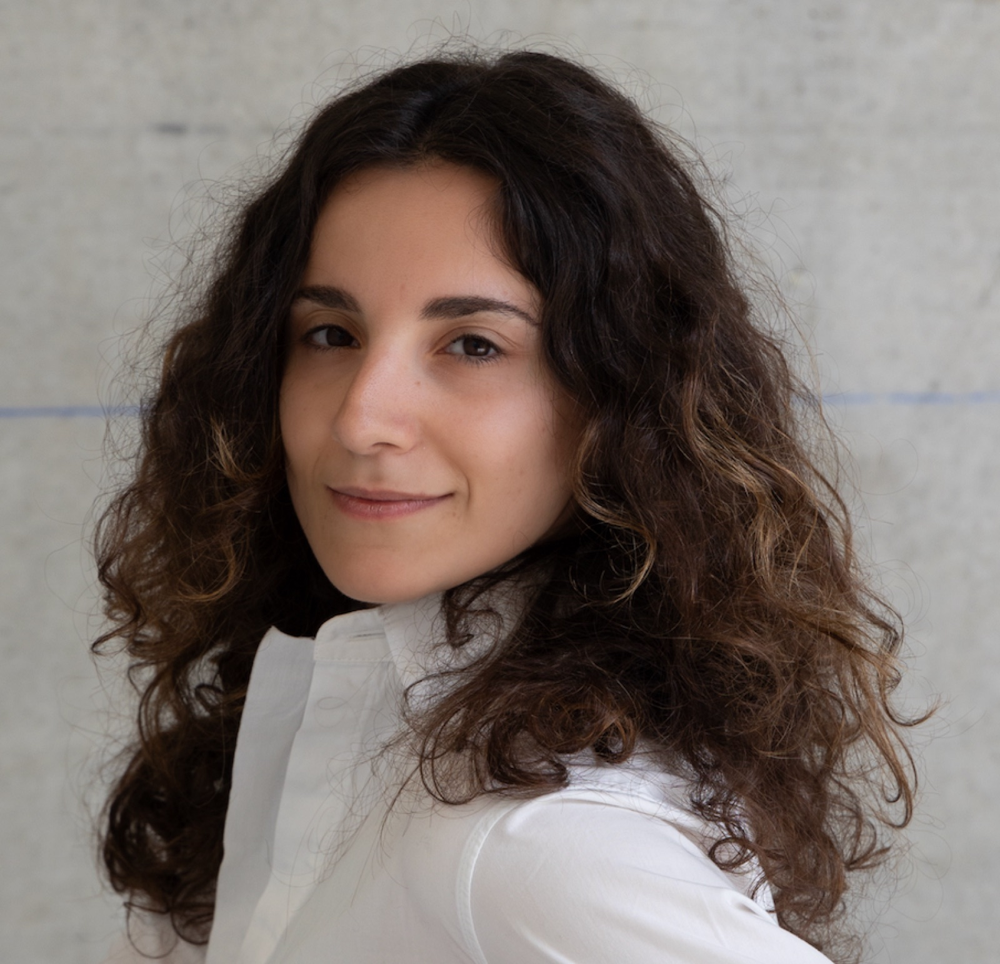

Architecte diplômée d’État · Docteure · Enseignante
Architecture, ambiances
& recherche.
Michèle Atié s’intéresse à la perception et à l’expérience des espaces intérieurs. Son travail associe recherche, enseignement et création d’outils pour accompagner la conception architecturale.
Voir les travaux de recherche ↗
Discipline
Architecture & perception
Comprendre comment les personnes ressentent et vivent les espaces, à travers les ambiances et les usages.
Recherche & enseignement
Relier l’enquête, l’expérimentation et la transmission en architecture pour nourrir la conception et la pédagogie.
Création d’outils
Créer des outils pour aider les architectes dans leur travail de conception.